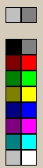
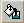
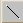
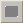
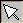

| File menu | | |
| Open | Opens the existing bitmap file for editing. |
| Save | Saves the current bitmap file. |
| Save As | Saves the current bitmap file with a different file name. |
| Edit menu | | |
| Clear | Erases the existing pixels |
| Grid Area | | The grid is 15 pixels high and 16 pixels wide. Bitmaps of any other size cannot be accommodated. |
Color palette

| | The two squares at the top of the palette show the currently selected colors. Apply the color in the left block with the left mouse button. Apply the color in the right block with the right mouse button. Select the remaining colors with the left or right mouse button. |
| Buttons: | | |
| Flood Fill | When selected, the pointer changes to a paint can. If you click the grid with Flood Fill selected, the area fills with the color until a boundary is reached. |
| Line Draw | When selected, the pointer changes to a line. To draw a line, click the cell where the line should start, and click the cell where it should end. A line connects the two points. |
| Rectangle Draw | When selected, the pointer changes to a rectangle. To draw a rectangle, first click the cell that designates the upper left corner of the rectangle, and click the cell that designates the lower right corner of the rectangle. A filled rectangle is drawn. |
| Arrow | The arrow button is the default state. When selected, you can color one cell at a time. |
| OK | Sets the button bitmap for the toolbar. When you edit a default button bitmap file, ASAP prompts you to save the revisions with a new file name. |
| Cancel | Closes the dialog box without making changes to the bitmap file. |